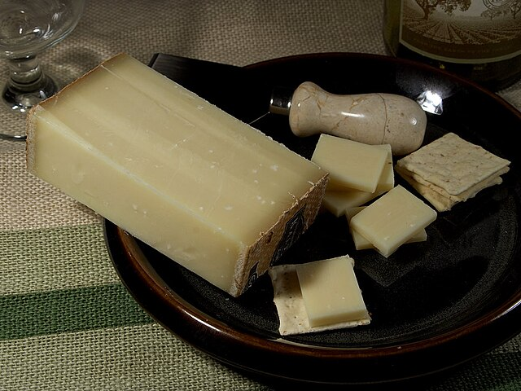
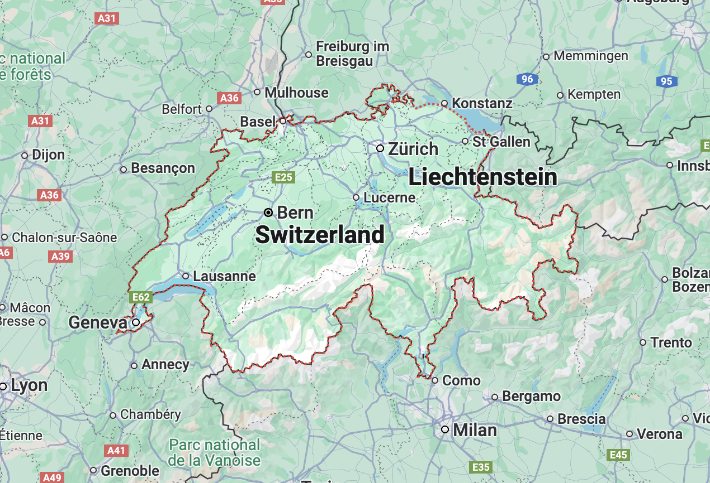

- Home
- Gruyere


GRUYERE
- Region: Switzerland
- Milk: Cow
- Texture: Semi-Hard
Gruyere is a firm yellowish cheese that is named after a town in Switzerland. The aging process ranges from 2 to 10 months and its melting properties make it an ideal ingredient for fondues and soups. Unlike other swiss varieties, Gruyere comes with small holes which are caused by trapped gas bubbles.
More InfoRECOMMENDED

Parmigiano Reggiano

Emmentaler

Wensleydale